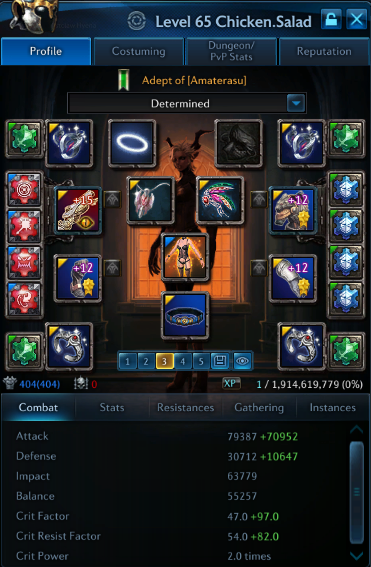
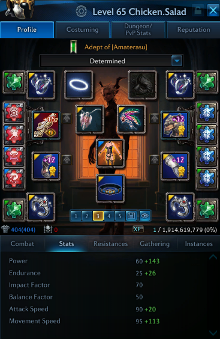
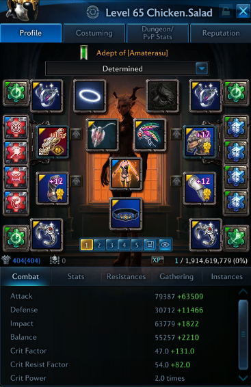
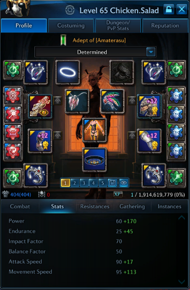
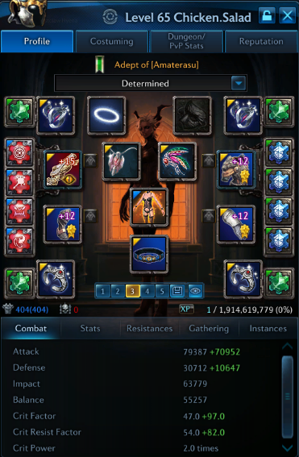
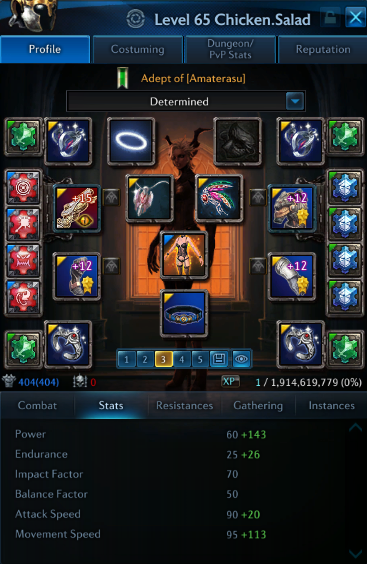
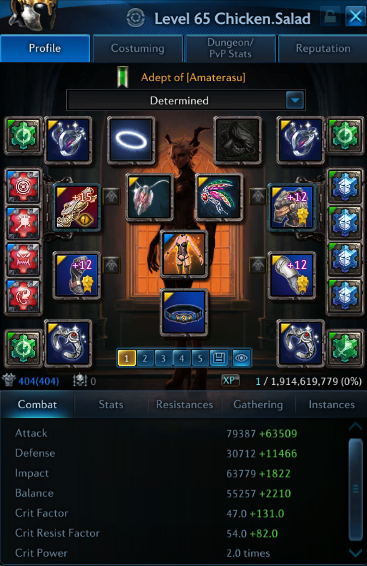
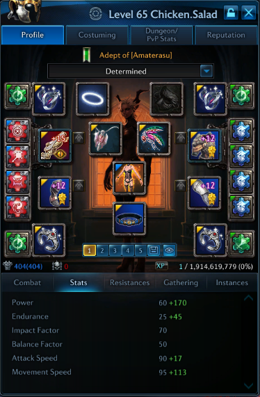
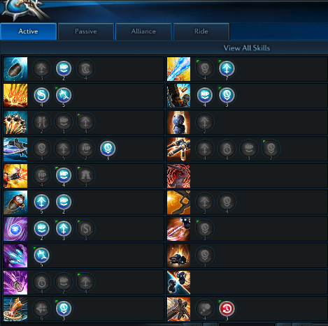

With Mystic

With Priest

With Mystic

With Priest

Permanent Pumped III on Lucid Weapon.
Permanent Pumped III on Generation Gloves.
Enrage/Enrage/Behind/Cooldown/Flat on Lucid Weapon.
Arcane Barrage DMG/HP/Frontal/Flat on Dreadnaught Chest.
Endurance/MP Regen/Movespeed on Dreadnaught Boots.
Power/Crit/Attack Speed on Generation Gloves.
12 CRIT Blue Innerwear.
6 CRIT/3 POWER on Empowered Brooch.
6 CRIT/3 POWER on Lucid Belt.
4 CRIT/4 POWER on Galleon/Corvette Rings.
4 ENDURANCE on Galleon/Corvette Earrings.
4 POWER on Cutter Necklace.

Insert glyph logic here.
Assuming you start with full willpower:
Brooch > Bombardment > Arcane Barrage > Replenish (cast AB again if reset) > Time Bomb > HB Summon > Burst Fire > Mana Missile (right after your burst fire ends) > Arc Bomb > Scattershot > Roll(if reset, scattershot again) > Arcane Barrage > Replenish (cast AB again if reset) > Time Bomb > Burst Fire > Mana Missile.
Koreans will tell you that crit is better than power because you get increased expected damage, which outpaces flat increases in damage on average. What they are saying is true for other classes, but not necessarily for gunners. The problem in Ktera is that DPS meters are not allowed, so they cannot accurately determine every class’s DPS and skill breakdowns unlike in NA Tera where the DPS meter is allowed. According to multiple tests, with 180 total crit rate, Time Bomb has a 100% crit rate (if done correctly, read question 2), Arcane Barrage has a 100% crit rate, and Burst Fire has an 80% crit rate. Arcane Barrage is roughly 30% of your damage, Burst Fire is roughly 30% of your damage, and Time Bomb is roughly 10% of your damage. Therefore, we can assume that Arcane Barrage, Burst Fire, and Time Bomb count as 70% of your damage on average, and the other 30% is the DPS contributed by the rest of your skills. Also, don’t get me started on Scattershot – the skill is complete trash, and it should only be used as a willpower generation/mobility/filler skill, so there’s no point in building full crit in order to get 80% crit rate on a FILLER skill. In short, try to aim for 180 total crit rate and then from there on build as much power as you want.
One important thing to know is that Burst Fire acts as a crit rate amplifier the more you use it. Usually, when you Burst Fire with full willpower, you get 100% crit rate on your Burst Fire at around half of your willpower. You can take advantage of this by applying this mechanic to other skills that have a delay such as Time Bomb or HB Summon. As you may know, when you cast Time Bomb, there is a delay before the bomb explodes. Before the bomb explodes, you can build up your crit rate by using Burst Fire right after you cast it, so after around 3 seconds, you are at about 100% crit rate which allows you to crit on every single one of your Time Bombs. You can also do this with HB Summon. In short, Time Bomb > HB Summon > Burst Fire is the ideal skill progression.
Double CDR etchings aren’t bad, but the setup is not optimal for PvE. If you were PvPing, CDR would be better than double pumped or double keen etchings. The utility of CDR etchings is to do your rotations faster since the CDR etchings have cooldown reduction stats and attack speed stats (which synergizes well with each other). If you have too much CDR but not enough attack speed, you will find that a lot of your skills are up before you even finish your rotation. The problem with gunner is that they don’t benefit from attack speed, so CDR etchings basically only gives you cooldown reduction but no attack speed. The best gunner rotation for optimal DPS does not require cooldown reduction. Also, the main reason people build CDR on gunner is to use Arcane Barrage more often. The problem with that is it doesn’t actually boost your damage, because gunners don’t rely 100% on Arcane Barrage, so a lot of times, I have AB up but I don’t cast it because I’m using Burst Fire. If you were to go full CDR, that means you would also need to roll 15% less cooldown on replenishment on your chest roll. Pumped or keen etchings are the way to go, since it gives you more damage in both Burst Fire/Arcane Barrage which, as stated previously, contribute about 60% of your dps (30% for AB and 30% for Burst Fire).
CPU: Intel Core i5-4690 Haswell Quad-Core 3.5 GHz.
RAM: 8.00GB Single-Channel DDR3.
GPU: 2048mb NVIDIA Geforce GTX 760.
Motherboard: ASUS Z97-C LGA 1150 Intel Z97 HDMI SATA 6Gb/s USB 3.0 ATX Intel Motherboard.
Go to our website here. Read everything, follow the instructions and good luck!